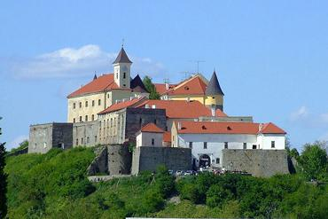
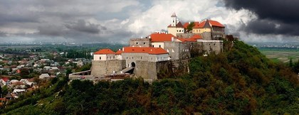

У південно-західній частині Мукачева стоїть Мукачівський замок, одна з найцінніших історичних і воєнно-архітектурних пам'яток Закарпаття XIV—XVII століть. Замок побудований на горі вулканічного походження заввишки 68 м і займає площу 13 930 кв. м. Точна дата заснування замку невідома, але в документах, які датуються XI століттям, він уже згадується.
З 1396 по 1414 року замком володів Подільський князь Федір Коріятович. Він значно розбудував і укріпив замок, перетворив його на свою резиденцію. Тоді ж у скелястій горі був вирубаний 85 метровий колодязь. Протягом XV—XVI століть замок побував у руках багатьох володарів, які його розбудовували та укріплювали. У цей час в оборонній системі замку було 14 веж, а у верхній частині був великий палац.
У 1567 році Мукачівський замок взяв у облогу Лазарус фон Швенді.
Мукачівський замок належав графу Миколаю Естергазі, який отримав його через одруження з Урсулою Дерсффі. У 1622 році за умовами Микульської угоди Мукачівський замок перейшов у володіння Габора Бетлена. Семигородський князь Юрій I Ракоці (Рагоцький) внаслідок війни, розпочатої з угорською родиною Естергазі, відвоював Мукачівський замок, який з того часу перебував у володінні родини Ракоці (Рагоцьких).
У 1633 р. Мукачівській замок придбав Трансільванський князь Юрій І Ракоці з правом успадкування. Князі династії Ракоці перетворили замок у столицю свого князівства і володіли ним до 1711 року. Після смерті Юрія І Ракоці в 1648 р. його дружина Жужанна Лорантффі продовжила реконструкцію замку і спорудила ще дві тераси — Середню і Нижню, а також зовнішнє оборонне кільце. У 1649 р. в замку побували посланці гетьмана Богдана Хмельницького, які вели переговори з Юрієм II Ракоці про спільні дії проти Польщі.
Вид на пагорб із замком та довколишню місцевість З 1685 по 1688 р. замок пережив одну з найбільших облог, яку здійснили війська Австрійського імператора. Керувала обороною замку вдова князя Ференца І Ракоці Ілона Зріні. Після захоплення замку австрійці його реконструювали, що зробило його найсильнішою фортецею на сході Австрійської імперії.
Хоча замок у свій час і входив до трансільванських земель, нічого спільного з вампірами та графом Дракулою він не має. Зате існують не менш моторошні історії про самого чорта, що живе на дні колодязя. Згідно переказів, Федір Корятович прагнув більш за все викопати колодязь для замку. Та на перешкоді стала скала, стіни криниці постійно обвалювалися та засипали дно. У відчаї Корятович готовий був кинутися сам на те засипане дно. Та тут з'явився сам чорт і запропонував угоду. Корятович йому - мішок золота, а дідько – воду. З радості Федір швидко погодився та зовсім забув, що грошей у казні зовсім нема. Та слуга підказав вихід. Чорт не уточнив скільки має бути золота в мішку, тому для оплати вкинули в міх дві монети. Угода була виконаною, але нечистий, страшенно розлючений, кинувся в криницю, і час від часу дає про себе чути досі.